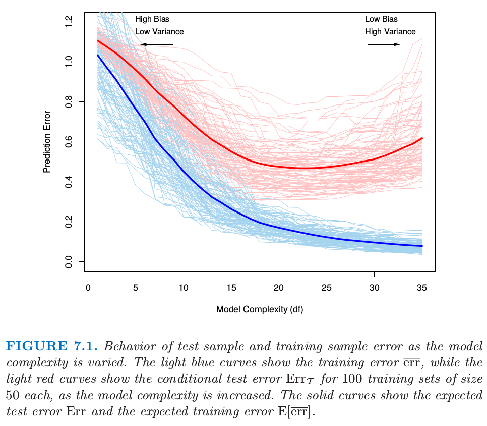

7.2 偏差、方差和模型复杂度
Contents
7.2 偏差、方差和模型复杂度¶
（）7.2.1 简单的回归任务分析¶
让我们从最简单的回归任务开始，考虑结果变量为“定量型”变量（又称“定距型”变量） 的情形。下图（图 7.1 ）展示了评估模型泛化能力时的一些重要问题。
Note
根据百度百科 即 知乎回答，定距变量也称间距变量，是取值具有“距离”特征的变量。统计学依据数据的计量尺度将数据分为四大类：
定距型 (interval scale): 数值变量，可加减，但不能乘除；不存在基准 0 值，即当变量值为 0 时不是表示没有，如温度变量。
定序型 (ordinal scale): 类别型变量，如性别。
定类型 (nominal scale): 不可以做四则运算，如满意度（非常满意、满意、一般、不满意、非常不满意）。
定比型 (ratio scale): 数值变量，存在 0 值，比值有意义。

图 7.1 当模型复杂度变化时测试样本和训练样本的误差。
（1）浅蓝色曲线代表训练误差，图中显示了当模型复杂度增加时训练误差 \(\overline{\text{err}}\) 的变化情况。（2）浅红色曲线代表测试误差，图中显示了当模型复杂度增加时 100 个训练集（样本大小为 50）的测试误差 \(\text{Err}_{\mathcal{T}}\) 的变化。（3）图中红蓝实线分别对应的测试误差的均值 \(\text{Err}\) 和训练误差的均值 \(\mathbf{E}[\overline{\text{err}}]\)
（1） 损失函数
我们有结果变量 \(Y\)，输入向量 \(X\)，以及从训练集 \(\mathcal{T}\) 估计出来的预测模型 \(\hat f(X)\)。另外，衡量 \(Y\) 与 \(\hat f(X)\) 之间误差的损失函数记为 \(L(Y,\hat f(X))\)。常用的损失函数选择包括：
（2） 测试误差及其期望
测试误差 (test error)，也被称作泛化误差 (generalization error)，是在独立测试样本上作预测时产生的损失。
注意：（1） \(X\) 和 \(Y\) 在此均为随机变量，都是从其联合分布（总体）中随机抽取的；（2）对于测试误差的评估任务而言，通常是在设置训练集 \(\mathcal{T}\) 不变的情况下,考察不同机器学习方法的测试误差；（3）测试误差评估不是针对某个或某些样本，而应当是面向随机抽取的任何可能样本，为定量描述测试误差，应考察其相关统计量 测试误差的期望 (expected test error) （或称为 预测误差的期望）：
注意：（1）计算该期望的所有测试样本都应当是随机的；（2）不仅测试样本是随机的，产生 \(\hat f\) 的训练集样本也应当是随机的。
图 7.1 中的浅红色曲线显示了 100 个模拟训练集（各 50 个样本）所对应的测试误差 \(\text{Err}_{\mathcal{T}}\) 。使用 lasso 回归（ 见 3.4.2 节）得到拟合模型序列。红色实线是 100 个误差的平均值，因此可视为 \(\text{Err}\) 的估计。
估计 \(\text{Err}_{\mathcal{T}}\) 是我们评估学习方法的主要目标，尽管我们即将会看到 \(\text{Err}\) 更适合于统计分析，而且大部分方法都能有效估计出预测误差的期望。如果仅仅给出同一个训练集的信息，有效地估计条件误差似乎不可能。这点的一些讨论将在 7.12 节给出。
（3） 训练误差
训练误差（ Training error ）是在训练样本上的平均损失：
我们想知道模型 \(\hat f\) 的测试误差期望值以判断模型的效果。随着模型越来越复杂时，其需要使用的训练数据也会更多，并且能够捕获更为复杂的潜在结构。因此偏差（bias）会有降低而方差（variance）会有增加。而一些中等复杂度的模型则给出了最小的测试误差期望值（注意图中红色实线的最小值所在位置）。
如图 7.1 中所示，训练误差并非对测试误差的良好估计。训练误差会随着模型复杂度增大不断减少，如果模型复杂性增加到足够大，训练误差将降为零，模型将可以捕获训练样本中的所有信息（包括噪声）。然而，零训练误差的模型通常意味着过拟合，并且泛化能力很差。
（）7.2.2 再观察下分类任务¶
对于结果变量为“定类型”变量 \(G\) 的分类任务，其实也存在类似情况。
\(G\) 在含有 \(K\) 个值的集合 \(\mathbb{G}\) 中取值，为了方便记 \(K\) 个值编号为 \(1,2,\ldots,K\)。一般地，我们对概率 \(p_k(X)=\mathrm{Pr}(G=k\mid X)\) （或者采用其他单调变换 \(f_k(X)\)） 进行建模，然后取概率最大的那个类别 \(\hat G(X)=\mathrm{\text{argmax}}_k \hat p_k(X)\)。当然，在某些情形下，我们也可以直接得到 \(\hat G(X)\)，例如 1-最近邻分类（见第 2 章和第 13 章）。典型的损失函数为：
\(-2\times \text{log-likelihood}\) 值有时也被称为偏差 (deviance)。
Note
一篇写得很棒的博客，What is deviance? – by kjytay 以及文中提到的 问题：为什么 saturated model 的 log likelihood 不总是 0？ 的回答。
这里测试误差为 \(\text{Err}_{\mathcal{T}}=\mathbf{E}[L(G,\hat G(X))\mid \mathcal{T}]\)，这是在 \(\mathcal{T}\) 上训练得到的分类器的误分类率。与回归任务类似，令 \(\text{Err}\) 为误分类率的期望。
训练误差也是关于样本的，例如：模型样本的对数似然。
对数似然可以作为大多数响应密度函数（指结果变量的概率密度函数）的损失函数，例如：Poisson 分布、Gamma 分布、指数族分布、对数正态分布等。如果 \(\Pr_{\theta(X)}(Y)\) 是 \(Y\) 的概率密度，该密度由依赖于输入变量 \(X\) 的参数集合 \(\theta(X)\) 来索引，则损失函数可以表示为：
公式中的 “-2” 使得高斯分布的对数似然损失与平方误差损失匹配。
（）7.2.3 统一的表达方法¶
为了表达的简洁性，在本章的剩余部分，我们将用 \(Y\) 和 \(f(X)\) 来表示上述定量和定类的所有情形，因此主要集中在定量型结果变量的（平方误差损失）设定上。对于其它的情形，显然可以进行合适的转换。
这章中我们描述一系列估计模型的测试误差期望 (\(\text{Err}\)) 的方法。通常模型会有一个调整参数 (tunning parameter) 或者参数 \(\alpha\)（很多书籍用 \(\theta\) ），所以可以把预测值写成 \(\hat f_\alpha(x)\)。调整参数会随着模型的复杂度而改变，而且我们希望找到 \(\alpha\) 值来最小化误差，即得到图 7.1 的平均测试误差曲线的最小值。为了简洁，后面将默认 \(\hat f(x)\) 暗示了对 \(\alpha\) 的依赖性。
重要的是要注意，事实上我们可能有两个单独的目标：
模型选择 (Model selection)： 估计不同模型的表现来选择最好的那个。
模型评估 (Model assessment)： 已经选择好了最终模型，估计它在新数据上的预测误差（泛化误差）。
如果我们处在有充足数据的情形中，对于这两个问题的最好的方式是将数据集随机地分成 3 个部分：训练集，验证集，以及测试集。
训练集用来拟合模型；
验证集用来估计预测误差来进行模型选择；
测试集用来评估最终选择的模型的泛化误差。
理想情形下，测试集应保存在黑箱中，并且只在数据分析结束时才会显示出来。否则，假设重复采用测试集，选择具有最小测试误差的模型，则最终所选择模型的测试误差会被低估，而且有时该偏差相当大。
如何为三个集合选择样本数量很难给出一般性规则，因为这取决于数据信噪比和训练样本的规模。一般的分割是 50% 用于训练，25% 用于验证，25% 用于测试：
本章的大多数方法是为没有足够数据来分成 3 部分的情形而设计的。同样地，也很难给出“多少训练数据才是足够的”一般规则，这与潜在函数的信噪比和模型复杂度都有关系。
Note
在 11.6 例子：模拟数据有提到信噪比为
另外 18.1 当 p 远大于 N 中也涉及信噪比。
本章方法主要有两类：
第一类通过分析手段 (AIC，BIC，MDL，SRM)
第二类通过有效的样本重利用（交叉验证和自助法）来近似验证过程（验证过程即比较候选模型选出最优的模型）。
除了在模型选择时使用它们，我们也检验了每个方法对最终所选模型测试误差估计的可靠性程度。
在讨论这些之前，首先进一步探究测试误差的本质与“偏差-方差”之间的权衡。